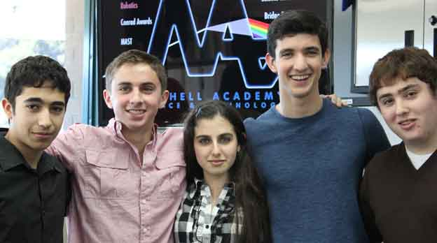

CRM Shielding has designed the XTF 1, a unique multifunctional shielding with applications for use both in Space and on Earth. The XTF 1 is designed to mitigate the threats of radiation and micrometeoroids in space and to lessen the threat of radiation exposure on Earth. The XTF 1 provides the solution to an unmet need that not only affects the aerospace industry currently, but has direct effects on the future of the industry?s success. Most current technologies are incompatible with many of the new creative spacecraft proposed by the burgeoning commercial space companies.
XTF 1 proves to be innovative in its novel arrangement of four technologies among four different layers to maximize its effectiveness, while being cost-effective and adaptable. It is anticipated to be better than any competing technology in use or in development while setting the bar for future competitors. Its function for radiation-related shielding and micrometeoroid shielding will allow its customers to save greatly on research and development and have a one- stop, one-shop place for all-encompassing shielding for the greatest threats of Space and on Earth.
XTF 1 will prove to be a financially viable and highly lucrative product in the fields of radiation protection and micrometeoroid protection. It will be marketed across several segments of the aerospace sector. With further development and utilization in the field, it will easily expand to be used in several Earth applications.